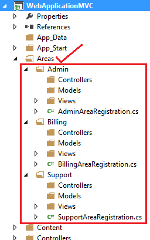

AREA
- Area are smaller functional units in an ASP.Net MVC project.
- It allows us to divide the big web application project into smaller functional units.
- Each Area has own controllers,models,and views.
- Physically,Areas are put under separate folders.
- Useful for managing big web application.
- A web application project can also use Areas from different projects.
- Using Areas, multiple developers can work on the same web application project by hacking (ie. removing Area project as separate project)
Practical

Here we can see we have create 3 Area. (Admin , Billing and Support)
Lets Look at Admin Area
1)Lets look at AdminAreaRegistration.cs inside Admin Area
public override void RegisterArea(AreaRegistrationContext context)
{
context.MapRoute(
"Billing_default",
"Admin/{controller}/{action}/{id}",
new { action = "Index", id = UrlParameter.Optional }
);
}
Look at this root closely, we will find this route begins with Admin and then controller, action and id (which is marked as optional).
Note:Here Admin is static which is fixed and other are dynamic
Pattern are
Admin/home/index
Admin/home/edit
Admin/post/edit/1
So focus at other
Don't forget to register the AreaRegistration in globalaspx
https://medium.com/@info_nishant/how-to-create-a-modular-web-application-in-c-mvc-85d8074a26bc
http://geekswithblogs.net/cokobware/archive/2013/01/15/asp.net-mvc-4-pluggable-application-modules.aspx
how to develop a pluggable ASP.NET MVC application project structure.